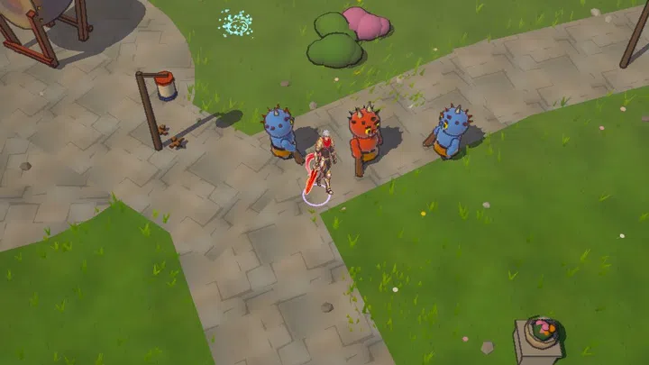
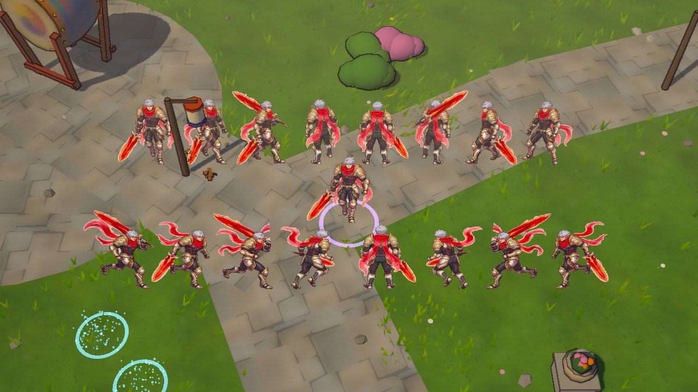
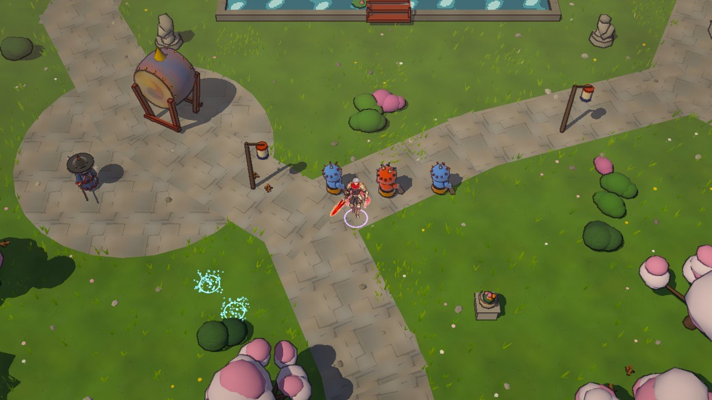
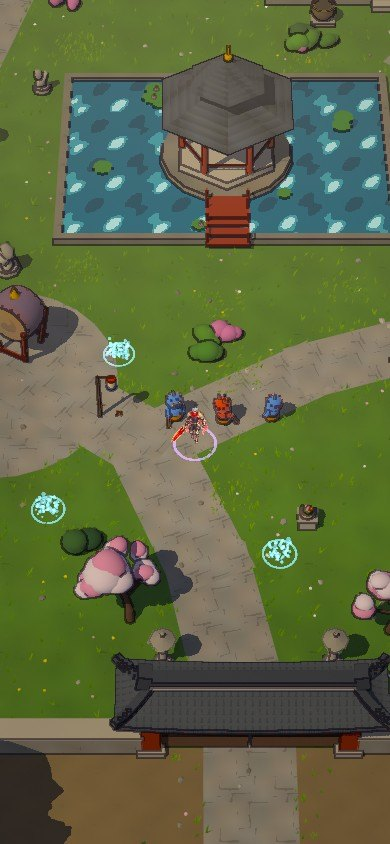
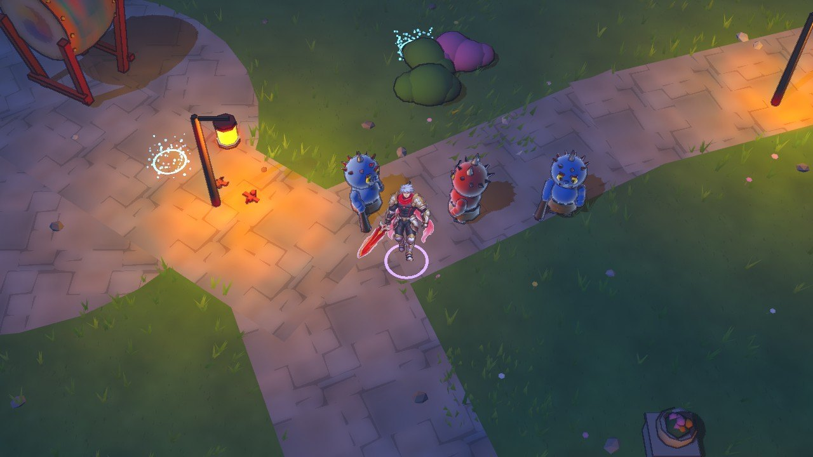
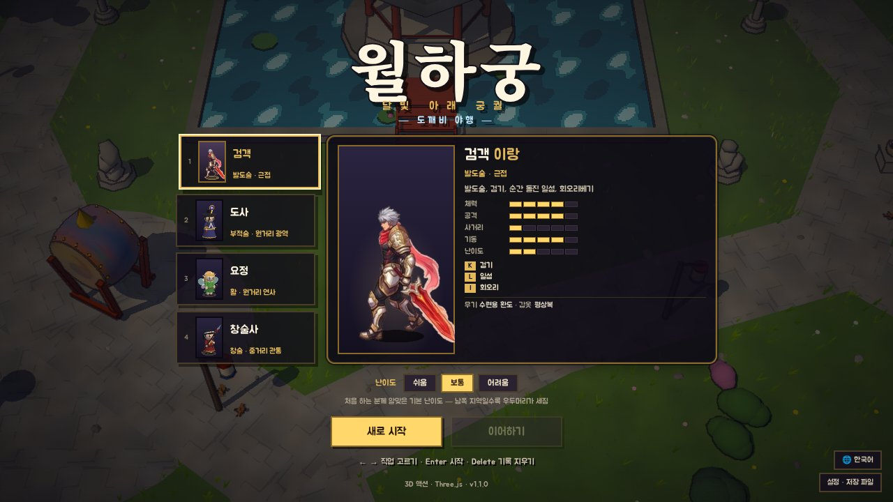
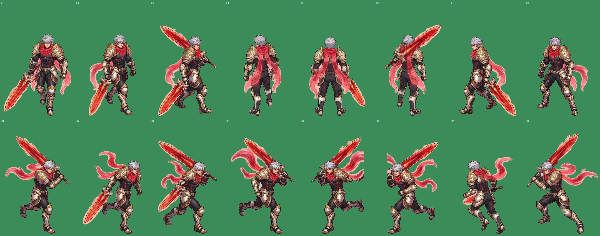

움직이는 장면
여덟 방향으로 한 바퀴 달린 뒤 도깨비를 세 번 베요. 찍는 동안 카메라를 따로 움직여서 화면이 조금 흔들려요.
달리기 → 베기
8방향과 달리기
위 줄은 서 있을 때 여덟 방향(아래부터 시계 방향), 아래 줄은 같은 방향으로 달릴 때 쓰는 그림이에요. 가운데가 플레이어예요.
가까이
기본 거리 · 휴대폰 · 밤
기본 거리
휴대폰
밤
시작 화면 · 직업 카드
시트에서 잘라낸 그림
베이지 모눈 배경을 지우고 한 장씩 나눴어요. 위 줄(a1~a8)은 여덟 방향, 아래 줄(b1~b8)은 칼을 어깨에 멘 달리기 그림이에요.
16장
지금은 이렇게 움직여요
- 서 있기: 바라보는 방향의 그림(a1~a8)을 보여 주고 살짝 숨쉬어요.
- 달리기: 방향마다 아래 줄에서 비슷한 방향 그림 두 장을 골라 번갈아 보여 주고, 걸음마다 살짝 튀어요. 오른쪽은 왼쪽 그림을 뒤집어 써요.
- 공격: 칼을 어깨에 멘 그림 → 서 있는 그림으로 바꾸며 앞으로 내딛고, 게임의 베기 효과가 겹쳐요.
- 맞을 때 · 쓰러질 때: 하얗게 번쩍이며 뒤로 기울고, 쓰러지면 그림이 바닥에 누워요.
- 그림자 · 밤: 그림자는 그대로 드리우고, 밤에는 그림을 푸르고 어둡게 칠해요.
- 선택 화면 · 얼굴: 직업 카드와 왼쪽 위 얼굴도 이 그림으로 바꿨어요.
이 시트로는 아쉬운 점
- 걷기: 아래 줄 8장은 방향이 섞인 달리기 그림이라 한 방향의 연속 동작이 아니에요. 그래서 다리가 끊겨 보이고, 위쪽으로 달릴 때는 그림이 없어 뒷모습을 흔들기만 해요.
- 공격: 칼을 휘두르는 그림이 없어서 지금은 그림을 바꿔 끼우는 정도예요.
- 그림마다 다름: 칼을 쥔 손, 스카프 모양, 몸 크기가 장마다 조금씩 달라서 방향이 바뀔 때 튀어 보여요.
- 가장자리: 배경이 투명하지 않아서 지웠는데, 칼과 스카프의 빛 번짐 둘레에 베이지색이 조금 남아요.
- 꾸미기: 3D 옷 색·날개 꾸밈은 그림에 보이지 않아요(오라는 보여요). 그림 캐릭터용 꾸밈은 따로 정해야 해요.
다음에 보내 주시면 좋은 그림
아래처럼 보내 주시면 같은 코드에 그대로 끼워서 훨씬 매끄럽게 움직여요. 한 방향만 먼저 보내 주셔도 바로 넣어서 보여 드릴게요.
| 동작 | 방향 | 장수 | 메모 |
|---|
| 걷기(또는 달리기) | 아래 · 오른아래 · 오른쪽 · 오른위 · 위 | 방향마다 6~8장 | 한 방향의 한 걸음 주기를 이어서. 왼쪽 방향은 뒤집어서 써요 |
| 공격 | 같은 5방향 | 방향마다 4~6장 | 준비 → 베기 → 마무리. 3연타면 연타마다 따로 있으면 더 좋아요 |
| 피격 | 같은 5방향 | 방향마다 1~2장 | 움찔하는 자세 |
| 쓰러짐 | 아래 하나면 충분 | 2~3장 | 없으면 지금처럼 눕혀요 |
- 배경은 투명 PNG(없으면 이번처럼 단색이나 모눈이어도 지울 수 있어요).
- 모든 장의 캐릭터 크기·칼 쥔 손을 같게, 발끝은 같은 높이에.
- 장끼리 겹치지 않게 간격을 두면 자르기가 정확해요.